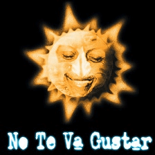
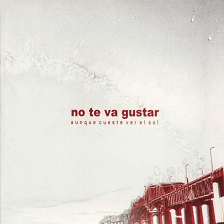
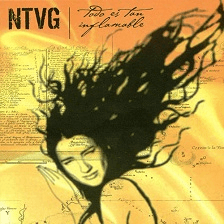
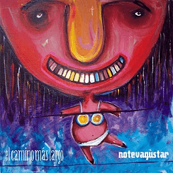
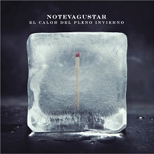
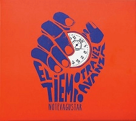
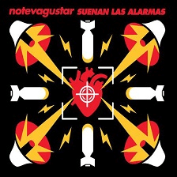
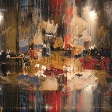

Discografias
Solo de noche

Integrantes
Emiliano Brancciari: Voz - Coros - Percusión
Mateo Moreno: Bajo - Coros
Pablo Adbala: Batería - Percusión
Gonzalo Castex: Percusión
Pamela Retamoza: Saxo tenor - Coros
Emiliano Garcia: Saxo alto
Martín Gil: Trompeta - Coros
Santiago Svirsky: Trombón - Coros
Este fuerte viento que sopla
Integrantes
Emiliano Brancciari: Voz - Guitarra - Coros
Mateo Moreno: Bajo - Coros
Pablo Adbala: Batería - Platillos
Gonzalo Castex: Percusión - Bombo
Martín Gil: Trompeta - Coros
Denis Ramos: Trombón - Coros
Mauricio Ortiz: Saxo
Dani Gerpe: Coordinación general
Aunque cueste ver el sol

Integrantes
Emiliano Brancciari: Voz - Guitarra
Mateo Moreno: Bajo - Guitarra
Pablo Adbala: Batería - Percusión
Gonzalo Castex: Batería - Percusión
Martín Gil: Trompeta
Mauricio Ortiz: Saxo
Denis Ramos: Trombón
Todo es tan inflamable

Integrantes
Emiliano Brancciari: Voz - Guitarra - Coros
Mateo Moreno: Bajo - Coros - Voz
Pablo Adbala: Batería - Platos
Gonzalo Castex: Batería - Percusión
Martín Gil: Trompeta - Coros
Denis Ramos: Trombón - Tuba
Mauricio Ortiz: Saxofón tenor y barítono
Marcel Curuchet: Piano - Sintetizadores
El camino mas largo

Integrantes
Emiliano Brancciari: Voz - Guitarra - Coros
Gonzalo Castex: Guitarra - Percusión
Martín Gil: Trompeta - Flugelhorn - Coros
Denis Ramos: Trombón - Euphonium
Marcel Curuchet: Teclados
Diego Bartaburu: Batería
Guzmán Silveira: Bajo
Por lo menos hoy
Integrantes
Emiliano Brancciari: Voz - Guitarra
Pablo Coniberti: Guitarra
Guzmán Silveira: Bajo
Diego Bartaburu: Batería
Denis Ramos: Trombón
Martín Gil: Trompeta
Mauricio Ortiz: Saxo
Gonzalo Castex: Percusión - Batería
El calor del pleno invierno

Integrantes
Emiliano Brancciari: Voz - Loog guitar
Gonzalo Castex: Percusión - Wavedrum
Martín Gil: Trompeta - Fliscorno
Denis Ramos: Trombón - Eufonio - Coros
Mauricio Ortiz: Saxo tenor y barítono
Marcel Curuchet: Teclados - Piano de cola
Diego Bartaburu: Batería - Coros
Guzmán Silveira: Bajo - Guitarra - Coros
Pablo Coniberti: Guitarra
El tiempo otra vez avanza

Integrantes
Emiliano Brancciari: Voz - Guitarra
Pablo Coniberti: Guitarra
Francisco Nasser: Bajo
Diego Bartaburu: Batería
Mauricio Ortiz: Saxo
Martín Gil: Trompeta
Denis Ramos: Trombón
Gonzalo Castex: Percusión
Suenan las alarmas

Integrantes
Emiliano Brancciari: Voz - Guitarra
Mauricio Ortiz: Saxo
Denis Ramos: Trombón - Coros
Martín Gil: Trompeta - Coros
Guzmán Silveira: Bajo - Coros
Pablo Coniberti: Guitarra - Coros
Francisco Nasser: Teclados - Coros
Diego Bartaburu: Batería
Otras canciones

Integrantes
Emiliano Brancciari: Voz - Guitarra eléctrica
Francisco Nasser: Teclados - Coros
Diego Bartaburu: Batería
Mauricio Ortiz: Saxo
Denis Ramos: Trombón - Coros
Martín Gil: Trompeta
Guzmán Silveira: Bajo - Coros
Gonzalo Castex: Percusión
Comodín
Al vacío ft. Catalina García y Flor de Toloache
Esos ojos
Cruz de Olvido ft. Flor de Toloache
Chau ft. Julieta Venegas
Me ilumina hoy ft. Flor de Toloache
A las nueve
Clara ft. Hugo Fattoruso
Tirano
De nada sirve ft. Jorge Drexler
Te quedás ft. Flor de Toloache
Verte reír ft. Flor de Toloache
Poco ft. Draco Rosa
No era cierto ft. Flor de Toloache
Luz
Integrantes
Emiliano Brancciari: Voz - Guitarra
Mateo Moreno: Bajo - Guitarra
Pablo Adbala: Batería - Percusión
Gonzalo Castex: Batería - Percusión
Martín Gil: Trompeta
Mauricio Ortiz: Saxo
Denis Ramos: Trombón